Edge effects on species establishement, growth and survival in an experimental plant invasion
08 March, 2018
| Species | Status |
|---|---|
| Dogwood (Cornus florida) | Native |
| Redbud (Cercis canadensis) | Native |
| Spicebush (Lindera benzoin) | Native |
| Autumn olive (Elaeagnus umbellata) | Non-native |
| Honeysuckle (Lonicera maackii) | Non-native |
| Privet (Ligustrum obtusifolium) | Non-native |
Experiment A: Seed germination
- Ten seeds from each of six species (3 invaders, 3 natives) were placed at each distance at each site.
Experiment B: Seedling survival and growth
Seedlings of six species (3 invaders, 3 natives) were planted at 12 forest sites classified as mature (>60 years) or young (<40 years).
Four seedlings of each species at distances of 0, 5, 10, 20, 40, and 60 meters from the roadway edge.
All seedlings were 10-15cm tall when planted
H1: There is a negative effect on survival and growth for all species moving from edge to interior
- Performance will also be poorer in mature versus young forests
H2: Non-native species perform relatively better near the edge and in young forests.
- Native species perform relatively better in interior locations and in mature forests
Site data
We measured environmental and forest structure characteristics at each distance along each transect at each site.
Trees
A 10-BAF wedge prism was used to quantify basal area. We identified and measured the DBH of the five nearest trees that were counted as “in” using the wedge prism.


Basal area essentially defines young (<40 years) vs. mature forest (>60 years), although the difference is much smaller at the edge (i.e. 0 m).
Light availability
In the summer of 2005, photosynthetically active radiation (PAR) was measured as photosynthetic photon flux density (PPFD) at five locations at each distance at each site along a 5 m long transect parallel to the road. From these measurements, we calculated the percent available light at each location as the ratio of the PAR value to the PAR value measured in open sun.


Light availability decreases with distance to road with no overall difference between forest age, however, there is substantial variation within and between forest age depending on the specific distance. Averaged across forest age, light availability was greater at the forest edge (0 m) compared to other distances. At mature forest sites, light availability was greatest at the forest edge (0 m), but at young forest sites it was greatest at 20 m from the edge.
Basically this is a noisy and non-linear relationship. What I would generally expect is relatively high light availability at the edge, then a rapid decline to a steady-state as you move into the forest.
Soil moisture
In the summer of 2005, we also collected 125 cm3 mineral soil samples at the center of each 5 m transect to measure gravimetric water content.


Overall, soil moisture incarease further from the edge (p = .055), with a stronger relationship at young forest sites than mature forest sites (not significant except at 60 m). Still, the effective difference in the average soil moisture is only a couple percentage points.
Litter
We collected leaf litter from within a 25 cm x 25 cm PVC frame at each of the six distances from roads at each site in December 2008


Litter is greater in mature forests than young forests, but decreases with distance from edge after 5 meters in mature forests and increases with distance from edge in young forests. Litter may be especially important for modeling germination.
Species data
For all of these, the solid-fill symbols should be the non-native species.
Experiment 1: Seed germination
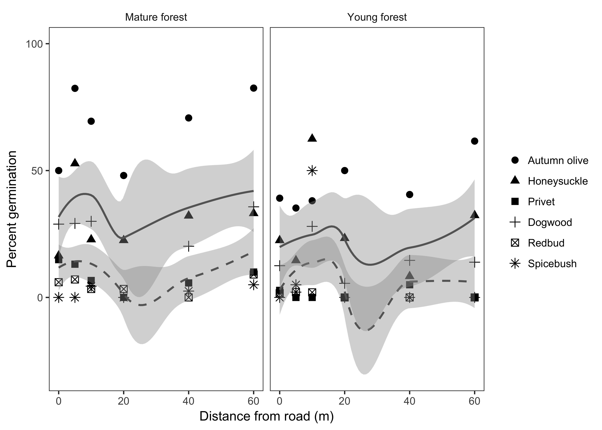 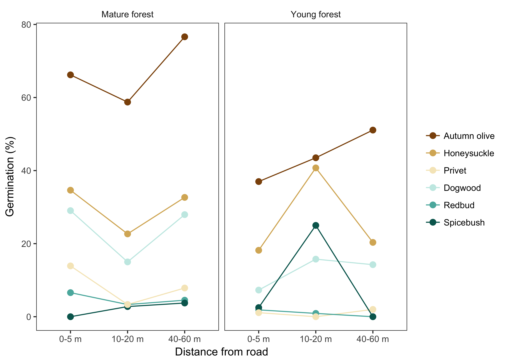
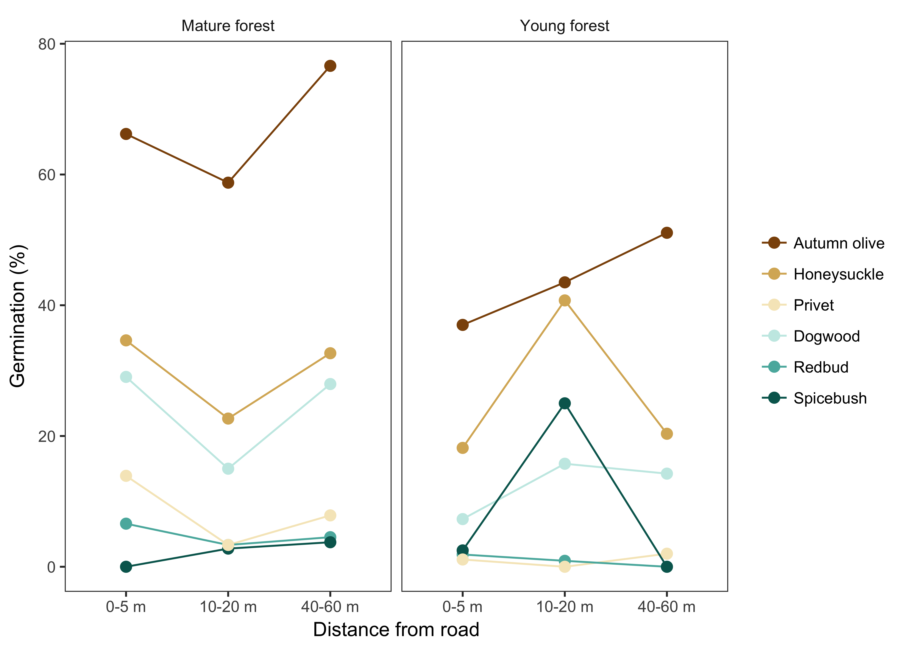
Although the relationship between germination and distance from edge was non-linaer, germination was greater overall for non-native than native species and tended to increase with distance for both groups in mature forests. In young forests, germination of native species had a small negative relationship with distance from edge. The greater germination success of non-native species was driven by autumnn olive, which had the highest average germination rate in each forest age (mature: 67.191358, young: 44.0744631).
| Species | Status | Mature forest | Young forest |
|---|---|---|---|
| Autumn olive | Non-native | 67.19 | 44.07 |
| Honeysuckle | Non-native | 29.99 | 25.34 |
| Privet | Non-native | 8.21 | 0.97 |
| Dogwood | Native | 23.85 | 12.34 |
| Redbud | Native | 4.77 | 0.96 |
| Spicebush | Native | 2.18 | 10.00 |
Experiment 2: Seedling growth and survival
Seedling survival
## [1] "site_name" "site_code" "age" "distance"
## [5] "species" "status" "habitat_type" "f_habitat"
## [9] "common_name" "avg_basal_area" "avg_pct_light" "litter_kg_m2"
## [13] "pct_moisture" "year" "survival"
 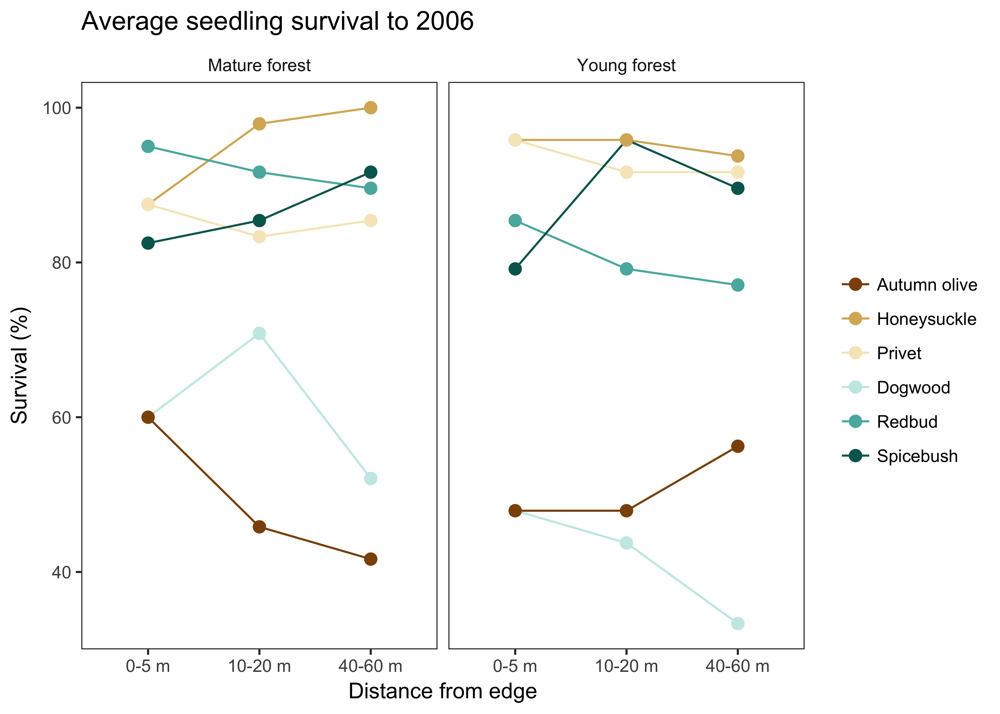
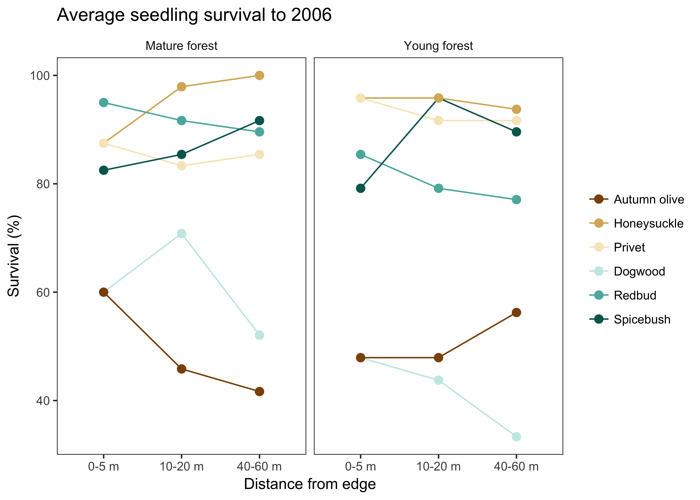
Seedling survival over the duration of the experiment was high across sites and species (NA). Autumn olive and dogwood had relatively low survival compared to the other species (AO: 49% mature, 50.7% young; DW: 60.4% mature, 41.7% young). Seedling survival for all other species averaged greater than 80%. In mature forests, autumn olive and dogwood both had lower survival with increasing distance from the edge, but in young forest autumn olive tended to have greater survival farther from the edge.
While these general linear trends with distance are present, the precise relationship with distance from edge is non-linear across all species. In mature forests, most species showed greatest survival at 5 and 10 m from the edge, with the exception of honeysuckle, which had greatest survival at distances of 20 m and greater. Honeysuckle also had the greatest proportion of overall surviving seedlings (94.8%). In contrast, seedling survival in young forests was overall lower for native than non-native species, and also lower at interior versus edge locations for native species, except for spicebush.
Seedling height


Seedling diameter


Seedling biomass
 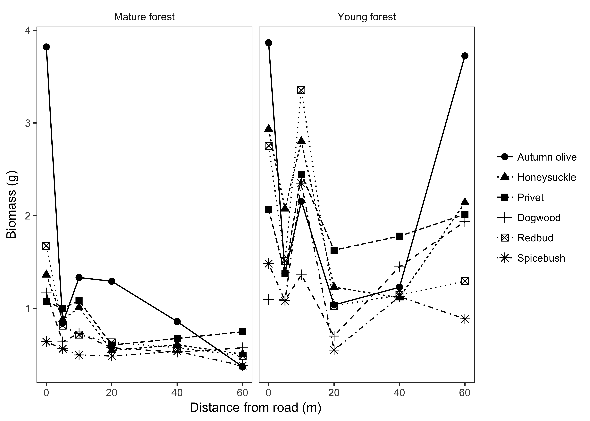
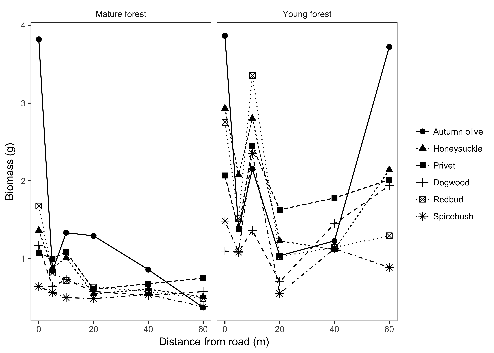
Seedling relative growth rate (height)
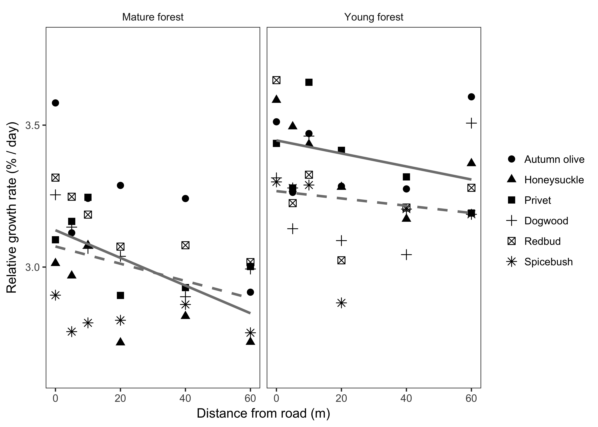

Seedling herbivory
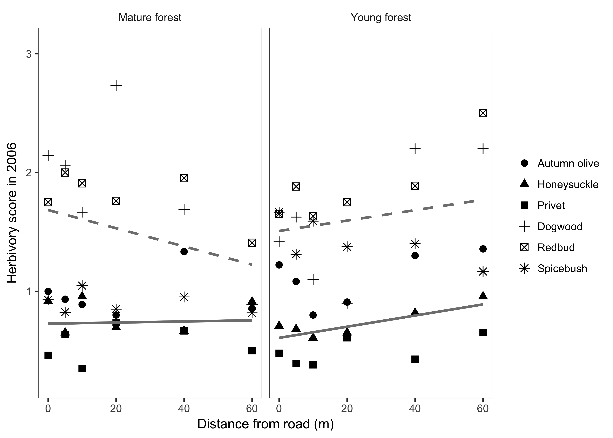 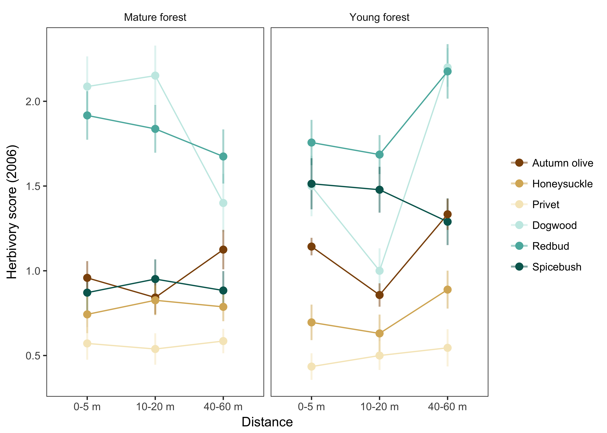
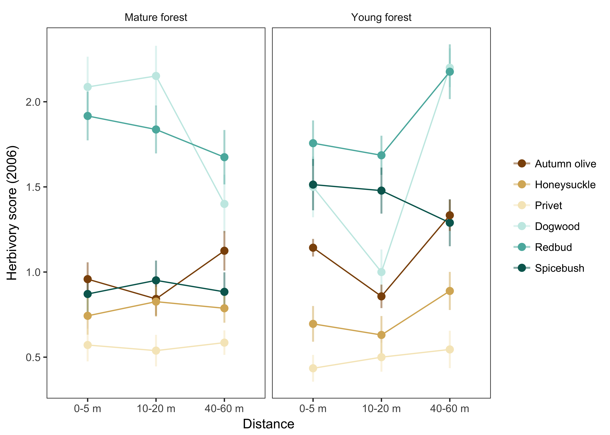
In young forests, herbivory increased with distance from edge for both native and non-native species, but decreased with distance from edge for native species in mature forests. There was no relationship between distance from edge and herbivory for non-native species in mature forests. Herbivory was greater on native than non-native species in both forest types.
Herbivory was categorized, where 1 = 1-25%, 2 = 26-50%, 3 = 51-75%.
What kind of herbivory might this be? Deer? Defoliators?
Modeling
Species/distance/site level grouping
This grouping of data would theoretically gives an average data point of the performance of each species at each distance at each site (n = 432). What we actually have is 420 observations, so we have 12 that were missing, I believe lost due to mowing at the edge. Upon investigating where observations were missing, we lost all seedlings at the 0 meter distance at the FR and HQ sites (n = 12), which means we have 10 instead of 12 observations for plants at 0 meters, but effectively equal observations of each species.
We calculated the average biomass accumulated, height, and relative growth rate for height acros the four replicates of each species at each distance at each site. These average values were used as the response variables in regression models.
response variable for each species as the average value at for that species at each distance and site, e.g.,
We calculated the average of each response variable
We fit mixed-effects models to each performance response variable - biomass, final height, and relative growth rate of height. Following methods described in Zuur et al. (2009), we first parameterized a “beyond optimal” model with all possible explanatory variables and potential interactions and used this to find the optimal structure of the random effects component. After finding the optimal random structure we found the optimal fixed structure by removing statistically insignificant interactions and then main effects. The single weakest explanatory variable was removed and the model refit to identify the next weakest explantory variable. This process was repeated until only statistically significant variables remained and accepted this as the final optimal model. We checked the residual plots of the final models to assure there was no major violation of homogeneity in the residual variance. Biomass and diameter responses were natural logarithm-transformed to improve homogeneity of residual variance and normality of the data. In all models we allowed the intercept to vary for species and site, and interpret the random intercepts of the performance metrics for each species. Models were fit and evaluated using the “lme4” (@Bates2015) and “lmerTest” (@Kuznetsova2017) packages in the R statistical computing environment. The coefficient estimates from rescaled continuous variables are reported in the figures. Percent light and percent moisture were centered to a mean of zero and divided by two standard deviations, and distance was rescaled to be between zero and one by dividing by the maximum distance value.
Biomass model
Diagnostic plots
## Linear mixed model fit by REML t-tests use Satterthwaite approximations
## to degrees of freedom [lmerMod]
## Formula: log(avg_biomass) ~ distance + avg_pct_light + age + distance *
## pct_moisture + (1 | site_code) + (1 | common_name)
## Data: site_grouped_data
##
## REML criterion at convergence: 826.6
##
## Scaled residuals:
## Min 1Q Median 3Q Max
## -3.0453 -0.5886 -0.0350 0.6298 3.2126
##
## Random effects:
## Groups Name Variance Std.Dev.
## site_code (Intercept) 0.16335 0.4042
## common_name (Intercept) 0.04722 0.2173
## Residual 0.37723 0.6142
## Number of obs: 399, groups: site_code, 12; common_name, 6
##
## Fixed effects:
## Estimate Std. Error df t value Pr(>|t|)
## (Intercept) 5.670e-02 3.073e-01 7.610e+01 0.185 0.85411
## distance -4.403e-02 8.528e-03 3.860e+02 -5.163 3.90e-07
## avg_pct_light 1.408e-02 2.276e-03 3.875e+02 6.185 1.58e-09
## ageYoung forest 5.500e-01 2.417e-01 9.900e+00 2.275 0.04629
## pct_moisture -4.525e-02 1.604e-02 3.880e+02 -2.822 0.00502
## distance:pct_moisture 2.439e-03 5.289e-04 3.863e+02 4.612 5.43e-06
##
## (Intercept)
## distance ***
## avg_pct_light ***
## ageYoung forest *
## pct_moisture **
## distance:pct_moisture ***
## ---
## Signif. codes: 0 '***' 0.001 '**' 0.01 '*' 0.05 '.' 0.1 ' ' 1
##
## Correlation of Fixed Effects:
## (Intr) distnc avg_p_ agYngf pct_ms
## distance -0.547
## avg_pct_lgh -0.082 -0.057
## ageYongfrst -0.388 0.028 -0.016
## pct_moistur -0.755 0.667 -0.089 -0.008
## dstnc:pct_m 0.562 -0.983 0.080 -0.026 -0.717 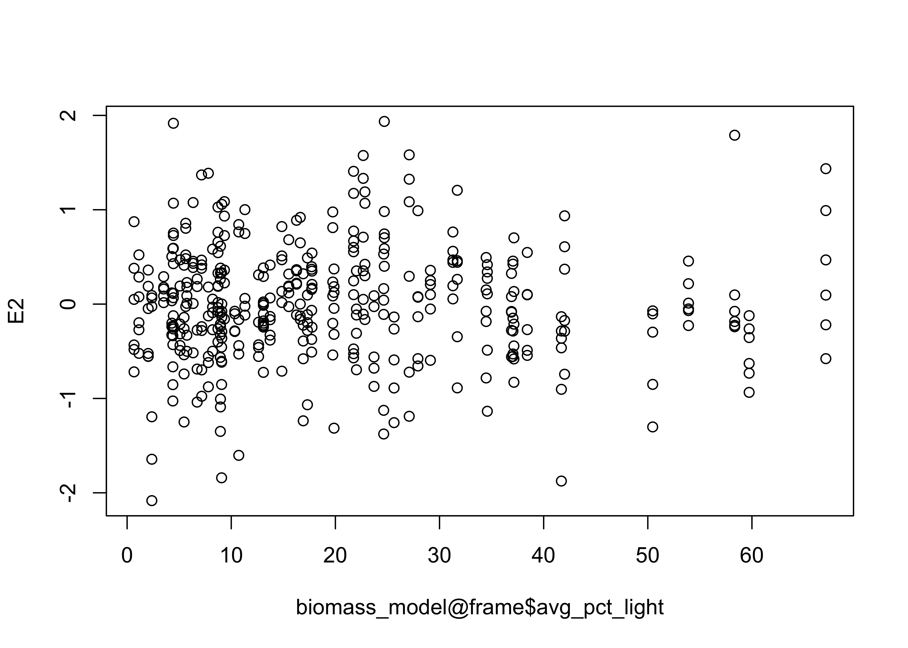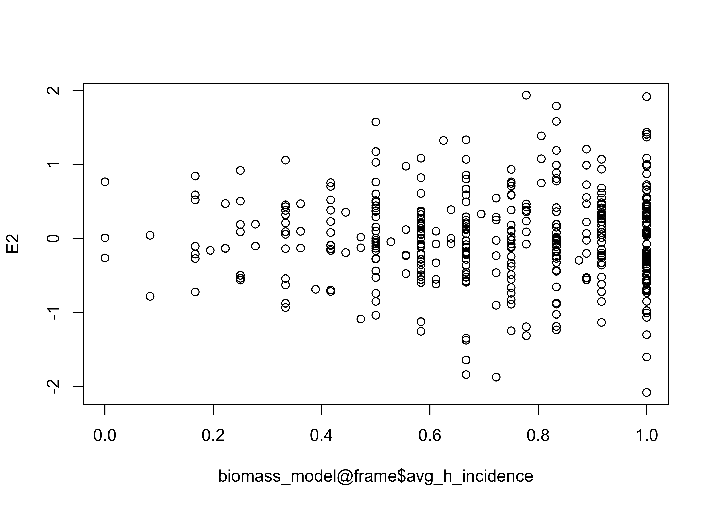
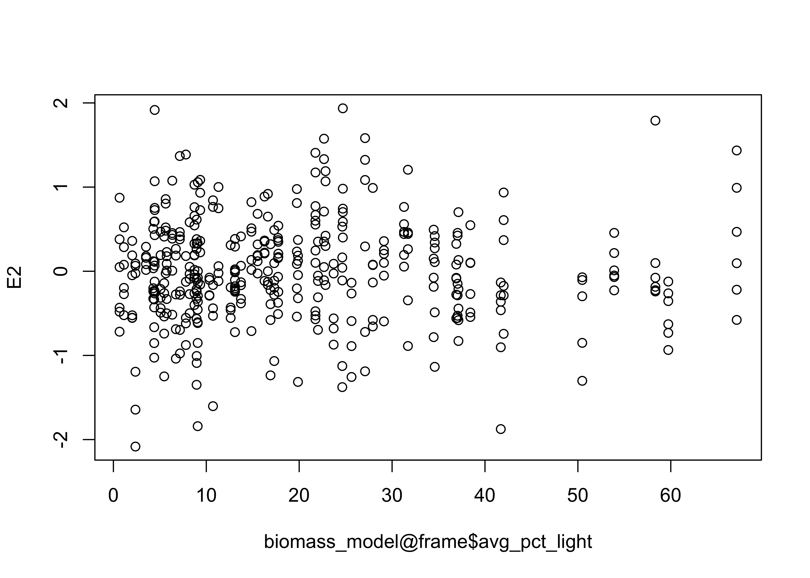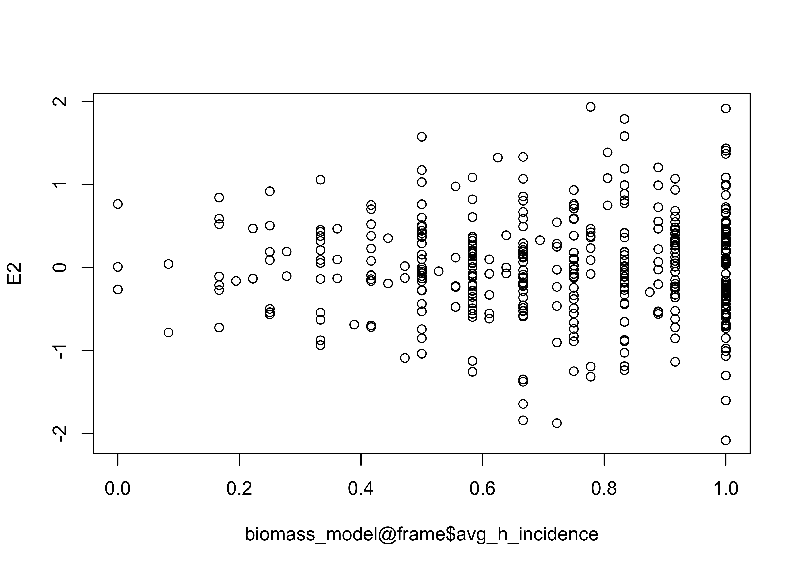
## Linear mixed model fit by REML t-tests use Satterthwaite approximations
## to degrees of freedom [lmerMod]
## Formula: log(avg_biomass) ~ scaled_distance + scaled_pct_light + age +
## scaled_distance * scaled_pct_moisture + (1 | site_code) +
## (1 | common_name)
## Data: site_grouped_data
##
## REML criterion at convergence: 795.7
##
## Scaled residuals:
## Min 1Q Median 3Q Max
## -3.0453 -0.5886 -0.0350 0.6298 3.2126
##
## Random effects:
## Groups Name Variance Std.Dev.
## site_code (Intercept) 0.16335 0.4042
## common_name (Intercept) 0.04722 0.2173
## Residual 0.37723 0.6142
## Number of obs: 399, groups: site_code, 12; common_name, 6
##
## Fixed effects:
## Estimate Std. Error df t value
## (Intercept) -0.36922 0.19647 14.70000 -1.879
## scaled_distance -0.37862 0.09398 380.00000 -4.029
## scaled_pct_light 0.43038 0.06959 387.50000 6.185
## ageYoung forest 0.55001 0.24172 9.90000 2.275
## scaled_pct_moisture -0.30712 0.10882 388.00000 -2.822
## scaled_distance:scaled_pct_moisture 0.99323 0.21536 386.30000 4.612
## Pr(>|t|)
## (Intercept) 0.08019 .
## scaled_distance 6.77e-05 ***
## scaled_pct_light 1.58e-09 ***
## ageYoung forest 0.04629 *
## scaled_pct_moisture 0.00502 **
## scaled_distance:scaled_pct_moisture 5.43e-06 ***
## ---
## Signif. codes: 0 '***' 0.001 '**' 0.01 '*' 0.05 '.' 0.1 ' ' 1
##
## Correlation of Fixed Effects:
## (Intr) scld_d scld_pct_l agYngf scld_pct_m
## scald_dstnc -0.190
## scld_pct_lg -0.015 0.107
## ageYongfrst -0.620 0.021 -0.016
## scld_pct_ms 0.061 -0.115 -0.089 -0.008
## scld_dst:__ -0.008 -0.132 0.080 -0.026 -0.717Model coefficients
 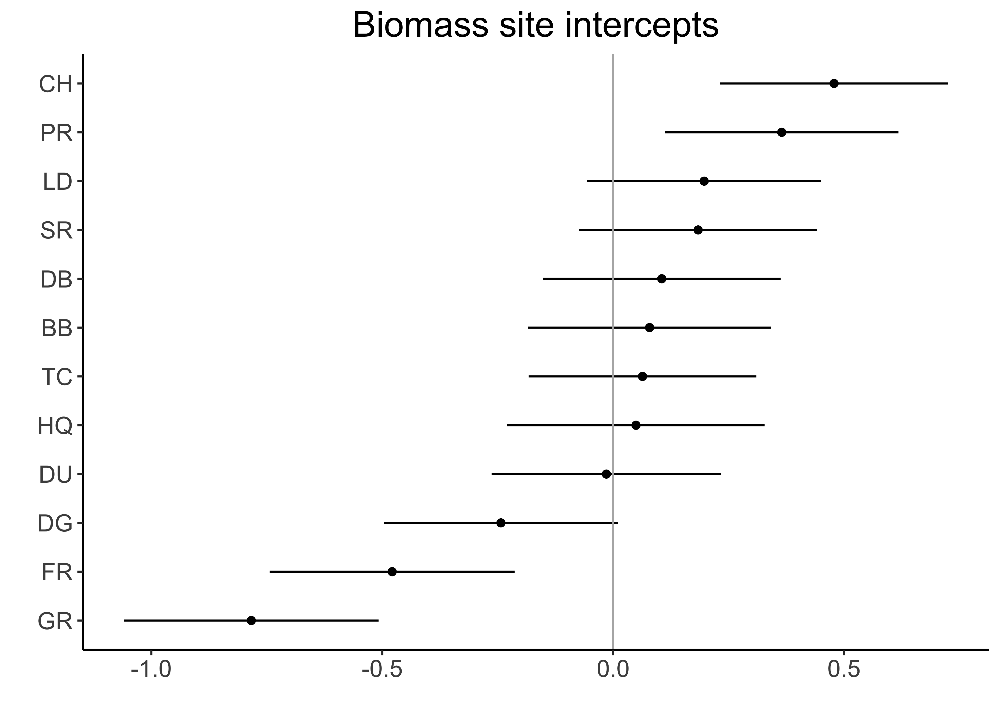
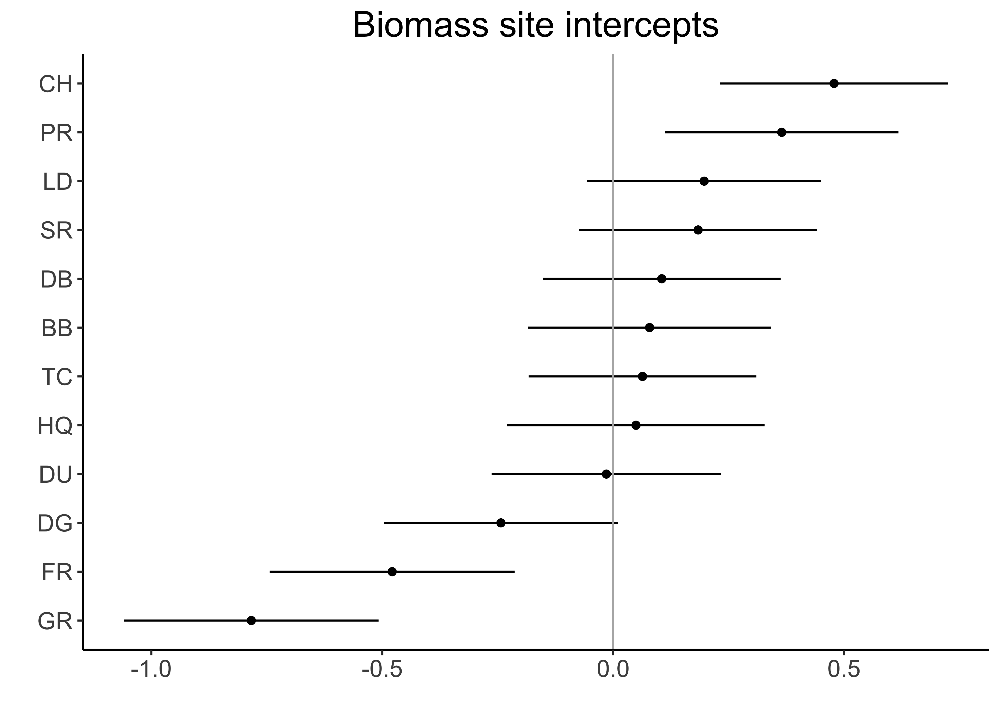
 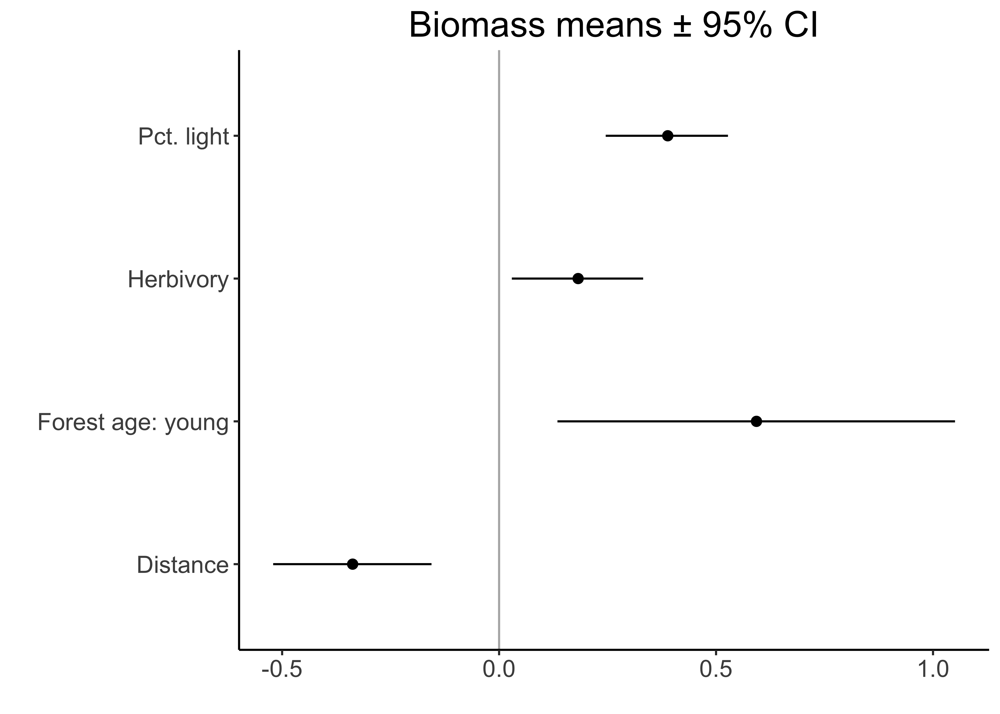
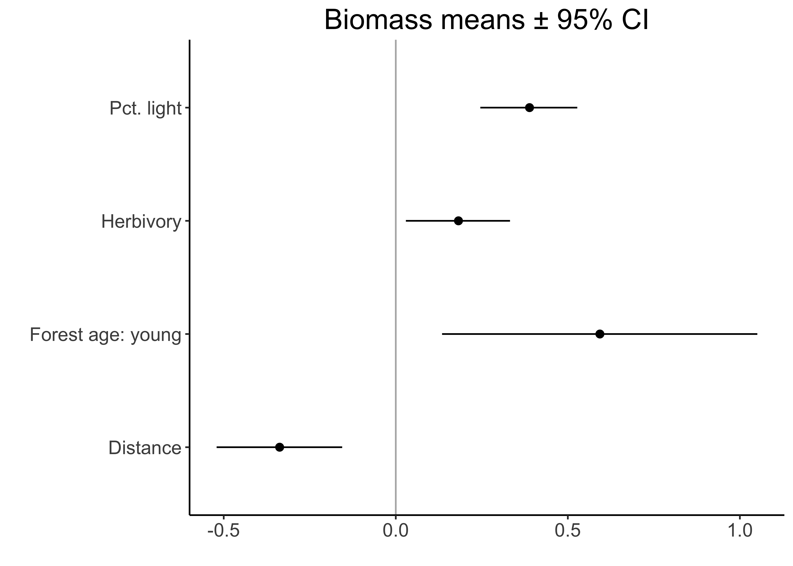
Conditional and marginal R2 of the biomass model 0.2355113, 0.5093745
All species generated more aboveground biomass in young forests and at locations with greater light availability. Biomass production decreased with distance from the road/forest edge and (interestingly) with greater soil moisture, however, there was a significant interaction between distance and soil moisture indicating greater soil moisture at distances farther from the edge.
The random intercepts for each species show that native species generated less biomass than non-native species, with spicebush and dogwood performing particularly poorly. For the non-native species, privet and autumn olive were especially good at amassing biomass, with honeysuckle performing slightly less well.
Site-level biomass production was greater at CH, PR, LD, and SR, while lower at DG, FR, and GR. The intercepts for the other five sites all had confidence error estimates crossing zero, with absolute values of the intercepts <0.12.
What about fitting a separate models for each species? I don’t think this is necessary unless we want to be able to say something specific about the relationship between the response and specific predictors for each species. I think it is reasonable to assume that the plants generally respond similarly to things like soil moisture and light availability.
Diameter model
## Linear mixed model fit by REML t-tests use Satterthwaite approximations
## to degrees of freedom [lmerMod]
## Formula: log(avg_diameter) ~ distance + avg_pct_light + age + distance *
## pct_moisture + (1 | site_code) + (1 | common_name)
## Data: site_grouped_data
##
## REML criterion at convergence: 88.4
##
## Scaled residuals:
## Min 1Q Median 3Q Max
## -2.9440 -0.6144 -0.0289 0.6238 3.4594
##
## Random effects:
## Groups Name Variance Std.Dev.
## site_code (Intercept) 0.013496 0.11617
## common_name (Intercept) 0.004104 0.06406
## Residual 0.058882 0.24266
## Number of obs: 399, groups: site_code, 12; common_name, 6
##
## Fixed effects:
## Estimate Std. Error df t value Pr(>|t|)
## (Intercept) 1.123e+00 1.097e-01 1.245e+02 10.238 < 2e-16
## distance -1.461e-02 3.351e-03 3.881e+02 -4.361 1.66e-05
## avg_pct_light 4.570e-03 8.925e-04 3.868e+02 5.121 4.81e-07
## ageYoung forest 1.885e-01 7.155e-02 1.000e+01 2.634 0.02494
## pct_moisture -1.637e-02 6.276e-03 3.837e+02 -2.609 0.00944
## distance:pct_moisture 8.411e-04 2.077e-04 3.881e+02 4.049 6.21e-05
##
## (Intercept) ***
## distance ***
## avg_pct_light ***
## ageYoung forest *
## pct_moisture **
## distance:pct_moisture ***
## ---
## Signif. codes: 0 '***' 0.001 '**' 0.01 '*' 0.05 '.' 0.1 ' ' 1
##
## Correlation of Fixed Effects:
## (Intr) distnc avg_p_ agYngf pct_ms
## distance -0.602
## avg_pct_lgh -0.093 -0.051
## ageYongfrst -0.318 0.037 -0.021
## pct_moistur -0.828 0.668 -0.086 -0.011
## dstnc:pct_m 0.618 -0.983 0.074 -0.034 -0.718


## Linear mixed model fit by REML t-tests use Satterthwaite approximations
## to degrees of freedom [lmerMod]
## Formula: log(avg_diameter) ~ scaled_distance + scaled_pct_light + age +
## scaled_distance * scaled_pct_moisture + (1 | site_code) +
## (1 | common_name)
## Data: site_grouped_data
##
## REML criterion at convergence: 57.5
##
## Scaled residuals:
## Min 1Q Median 3Q Max
## -2.9440 -0.6144 -0.0289 0.6238 3.4594
##
## Random effects:
## Groups Name Variance Std.Dev.
## site_code (Intercept) 0.013496 0.11617
## common_name (Intercept) 0.004104 0.06406
## Residual 0.058882 0.24266
## Number of obs: 399, groups: site_code, 12; common_name, 6
##
## Fixed effects:
## Estimate Std. Error df t value
## (Intercept) 0.95907 0.05899 15.30000 16.259
## scaled_distance -0.09626 0.03709 381.40000 -2.595
## scaled_pct_light 0.13969 0.02728 386.80000 5.121
## ageYoung forest 0.18849 0.07155 10.00000 2.634
## scaled_pct_moisture -0.11111 0.04259 383.70000 -2.609
## scaled_distance:scaled_pct_moisture 0.34249 0.08458 388.10000 4.049
## Pr(>|t|)
## (Intercept) 4.54e-11 ***
## scaled_distance 0.00982 **
## scaled_pct_light 4.81e-07 ***
## ageYoung forest 0.02494 *
## scaled_pct_moisture 0.00944 **
## scaled_distance:scaled_pct_moisture 6.21e-05 ***
## ---
## Signif. codes: 0 '***' 0.001 '**' 0.01 '*' 0.05 '.' 0.1 ' ' 1
##
## Correlation of Fixed Effects:
## (Intr) scld_d scld_pct_l agYngf scld_pct_m
## scald_dstnc -0.249
## scld_pct_lg -0.020 0.108
## ageYongfrst -0.616 0.027 -0.021
## scld_pct_ms 0.079 -0.113 -0.086 -0.011
## scld_dst:__ -0.011 -0.133 0.074 -0.034 -0.718 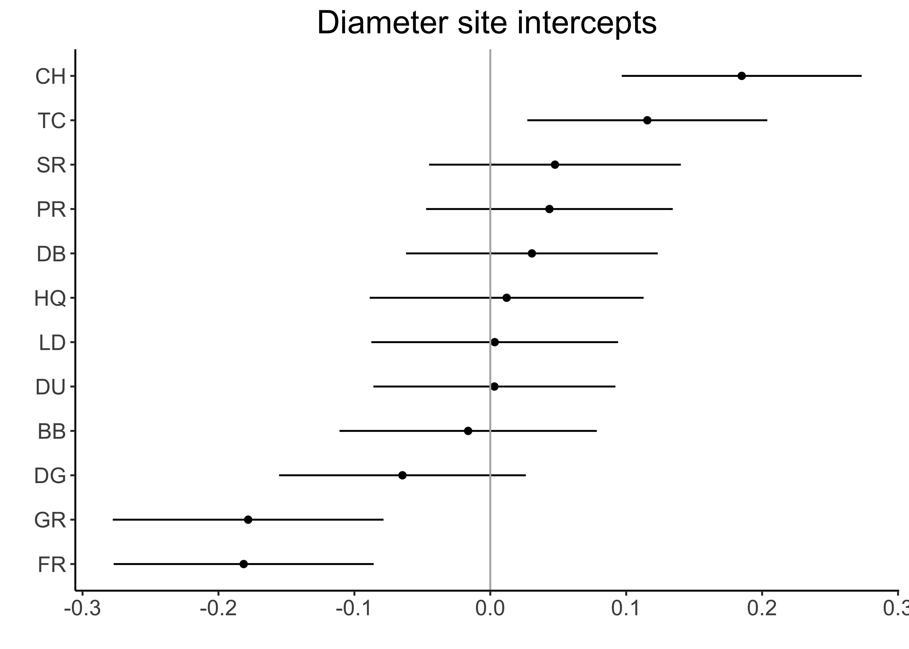
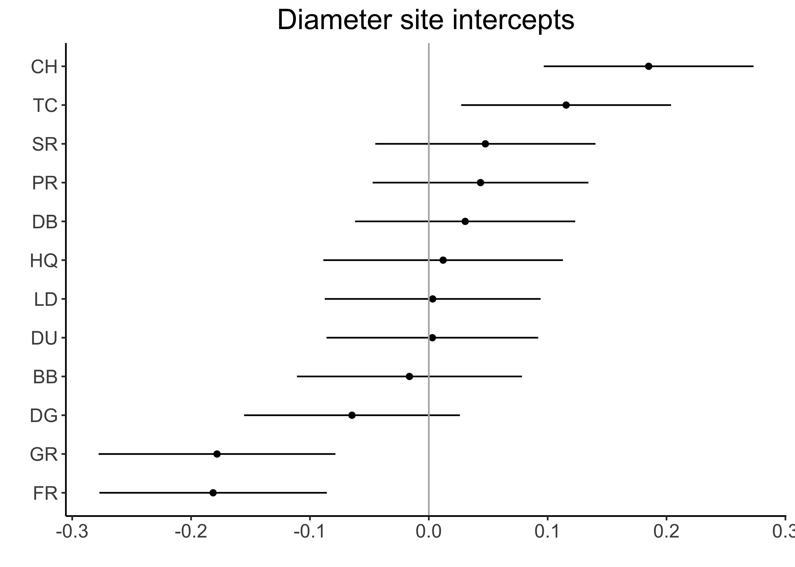
 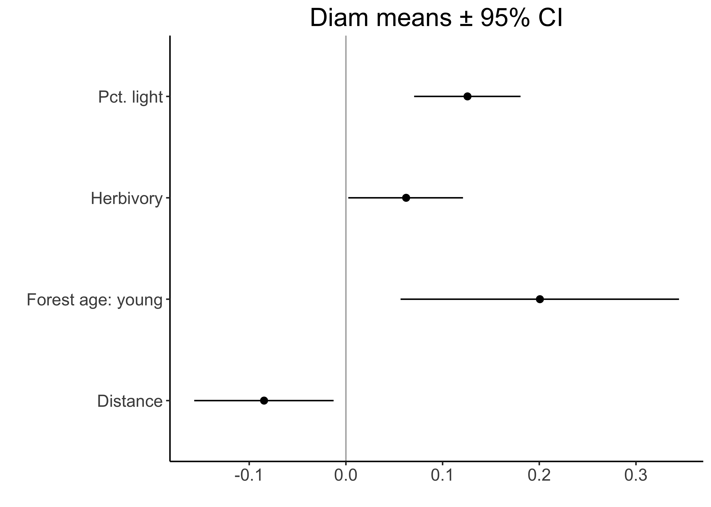
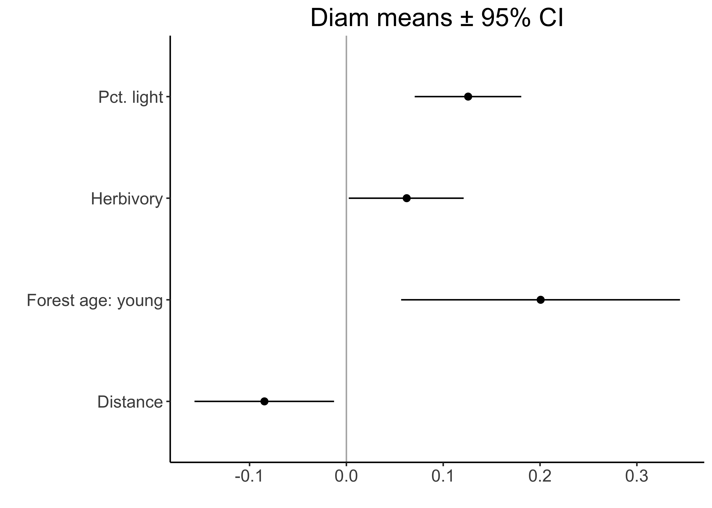
Conditional and marginal R2 estimated for the diameter model 0.2043497, 0.3874433
Relative growth rate model
The units of relative growth rate are percent change per day (I think).
Do we actually want to test/know what the slope/intercept interaction is between distance and species as a rondom component??
## Linear mixed model fit by REML t-tests use Satterthwaite approximations
## to degrees of freedom [lmerMod]
## Formula:
## avg_rgr_ht ~ distance + avg_pct_light + age + distance * pct_moisture +
## (1 | site_code) + (1 | common_name)
## Data: site_grouped_data
##
## REML criterion at convergence: 277.3
##
## Scaled residuals:
## Min 1Q Median 3Q Max
## -3.4386 -0.6097 -0.0025 0.6354 3.0069
##
## Random effects:
## Groups Name Variance Std.Dev.
## site_code (Intercept) 0.030607 0.17495
## common_name (Intercept) 0.008603 0.09275
## Residual 0.094203 0.30692
## Number of obs: 399, groups: site_code, 12; common_name, 6
##
## Fixed effects:
## Estimate Std. Error df t value Pr(>|t|)
## (Intercept) 3.228e+00 1.458e-01 9.620e+01 22.141 < 2e-16
## distance -1.824e-02 4.252e-03 3.873e+02 -4.290 2.26e-05
## avg_pct_light 4.554e-03 1.134e-03 3.881e+02 4.015 7.13e-05
## ageYoung forest 2.576e-01 1.058e-01 9.900e+00 2.434 0.035411
## pct_moisture -1.603e-02 7.984e-03 3.875e+02 -2.008 0.045351
## distance:pct_moisture 9.957e-04 2.637e-04 3.875e+02 3.776 0.000184
##
## (Intercept) ***
## distance ***
## avg_pct_light ***
## ageYoung forest *
## pct_moisture *
## distance:pct_moisture ***
## ---
## Signif. codes: 0 '***' 0.001 '**' 0.01 '*' 0.05 '.' 0.1 ' ' 1
##
## Correlation of Fixed Effects:
## (Intr) distnc avg_p_ agYngf pct_ms
## distance -0.575
## avg_pct_lgh -0.087 -0.054
## ageYongfrst -0.357 0.032 -0.018
## pct_moistur -0.793 0.667 -0.088 -0.009
## dstnc:pct_m 0.590 -0.983 0.077 -0.029 -0.718


## Linear mixed model fit by REML t-tests use Satterthwaite approximations
## to degrees of freedom [lmerMod]
## Formula:
## avg_rgr_ht ~ scaled_distance + scaled_pct_light + age + scaled_distance *
## scaled_pct_moisture + (1 | site_code) + (1 | common_name)
## Data: site_grouped_data
##
## REML criterion at convergence: 246.4
##
## Scaled residuals:
## Min 1Q Median 3Q Max
## -3.4386 -0.6097 -0.0025 0.6354 3.0069
##
## Random effects:
## Groups Name Variance Std.Dev.
## site_code (Intercept) 0.030607 0.17495
## common_name (Intercept) 0.008603 0.09275
## Residual 0.094203 0.30692
## Number of obs: 399, groups: site_code, 12; common_name, 6
##
## Fixed effects:
## Estimate Std. Error df t value
## (Intercept) 3.06876 0.08608 14.70000 35.650
## scaled_distance -0.17083 0.04694 380.40000 -3.639
## scaled_pct_light 0.13921 0.03467 388.10000 4.015
## ageYoung forest 0.25756 0.10581 9.90000 2.434
## scaled_pct_moisture -0.10879 0.05418 387.50000 -2.008
## scaled_distance:scaled_pct_moisture 0.40543 0.10737 387.50000 3.776
## Pr(>|t|)
## (Intercept) 8.88e-16 ***
## scaled_distance 0.000312 ***
## scaled_pct_light 7.13e-05 ***
## ageYoung forest 0.035411 *
## scaled_pct_moisture 0.045351 *
## scaled_distance:scaled_pct_moisture 0.000184 ***
## ---
## Signif. codes: 0 '***' 0.001 '**' 0.01 '*' 0.05 '.' 0.1 ' ' 1
##
## Correlation of Fixed Effects:
## (Intr) scld_d scld_pct_l agYngf scld_pct_m
## scald_dstnc -0.216
## scld_pct_lg -0.018 0.107
## ageYongfrst -0.621 0.024 -0.018
## scld_pct_ms 0.069 -0.114 -0.088 -0.009
## scld_dst:__ -0.010 -0.132 0.077 -0.029 -0.718 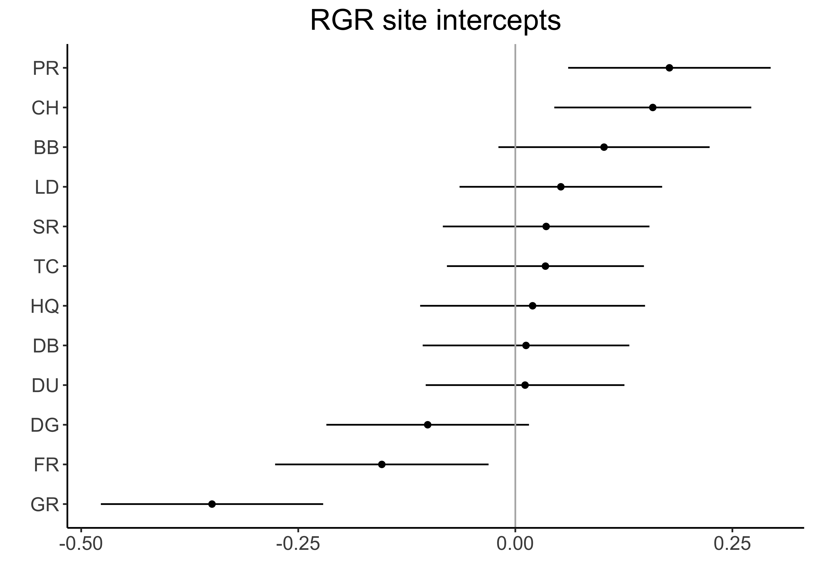
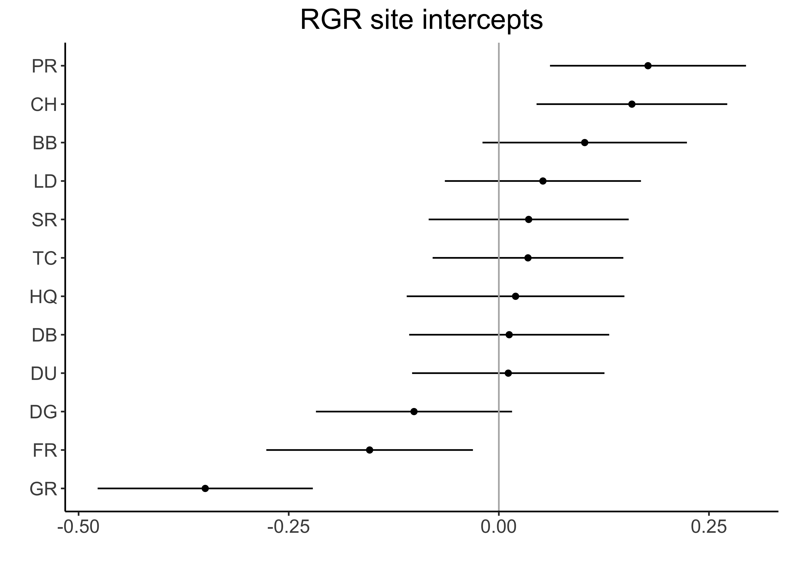


Conditional and marginal R2 estimated for the diameter model 0.1941434, 0.430983
The nonnative species autumn olive had the best performance in terms of relative growth rate (height), followed by privet. The native redbud and, and nonnative honeysuckle, had similar baseline performance in relative growth rate. Spicebush had the lowest relative growth rate. The effects of the explanatory variables on relative growth rate were all in the same directions as for diameter and biomass.
Percent germination model
Logistic regression with number of trials (seeds germinated:seeds recovered)
## Generalized linear mixed model fit by maximum likelihood (Laplace
## Approximation) [glmerMod]
## Family: binomial ( logit )
## Formula:
## cbind(seeds_germinated, seeds_present) ~ distance + avg_pct_light +
## avg_basal_area * age + litter_kg_m2 + (1 | site_code) + (1 |
## common_name)
## Data: germination_data
##
## AIC BIC logLik deviance df.resid
## 813.6 850.2 -397.8 795.6 422
##
## Scaled residuals:
## Min 1Q Median 3Q Max
## -1.8674 -0.6140 -0.2603 0.1917 5.1710
##
## Random effects:
## Groups Name Variance Std.Dev.
## site_code (Intercept) 0.08502 0.2916
## common_name (Intercept) 1.29184 1.1366
## Number of obs: 431, groups: site_code, 12; common_name, 6
##
## Fixed effects:
## Estimate Std. Error z value Pr(>|z|)
## (Intercept) -3.752274 0.679352 -5.523 3.33e-08 ***
## distance 0.006238 0.002459 2.537 0.01119 *
## avg_pct_light 0.009251 0.003787 2.443 0.01458 *
## avg_basal_area 0.024181 0.008876 2.724 0.00645 **
## ageYoung forest 0.821594 0.466951 1.759 0.07850 .
## litter_kg_m2 0.553471 0.219737 2.519 0.01178 *
## avg_basal_area:ageYoung forest -0.055812 0.022646 -2.464 0.01372 *
## ---
## Signif. codes: 0 '***' 0.001 '**' 0.01 '*' 0.05 '.' 0.1 ' ' 1
##
## Correlation of Fixed Effects:
## (Intr) distnc avg_p_ avg_b_ agYngf ltt__2
## distance -0.246
## avg_pct_lgh -0.376 0.278
## avg_basal_r -0.507 0.099 0.369
## ageYongfrst -0.505 0.136 0.233 0.600
## littr_kg_m2 -0.515 0.182 0.197 0.149 0.400
## avg_bsl_:Yf 0.331 -0.128 -0.143 -0.412 -0.843 -0.326


## Generalized linear mixed model fit by maximum likelihood (Laplace
## Approximation) [glmerMod]
## Family: binomial ( logit )
## Formula:
## cbind(seeds_germinated, seeds_present) ~ scaled_distance + scaled_pct_light +
## scaled_basal_area * age + scaled_litter_kg_m2 + (1 | site_code) +
## (1 | common_name)
## Data: germination_data
##
## AIC BIC logLik deviance df.resid
## 813.6 850.2 -397.8 795.6 422
##
## Scaled residuals:
## Min 1Q Median 3Q Max
## -1.8674 -0.6140 -0.2603 0.1917 5.1710
##
## Random effects:
## Groups Name Variance Std.Dev.
## site_code (Intercept) 0.08502 0.2916
## common_name (Intercept) 1.29184 1.1366
## Number of obs: 431, groups: site_code, 12; common_name, 6
##
## Fixed effects:
## Estimate Std. Error z value Pr(>|z|)
## (Intercept) -2.4439 0.5045 -4.844 1.27e-06 ***
## scaled_distance 0.3743 0.1475 2.537 0.01119 *
## scaled_pct_light 0.2990 0.1224 2.443 0.01458 *
## scaled_basal_area 0.4914 0.1804 2.724 0.00645 **
## ageYoung forest -0.4080 0.2721 -1.499 0.13379
## scaled_litter_kg_m2 0.3580 0.1421 2.519 0.01177 *
## scaled_basal_area:ageYoung forest -1.1342 0.4602 -2.464 0.01372 *
## ---
## Signif. codes: 0 '***' 0.001 '**' 0.01 '*' 0.05 '.' 0.1 ' ' 1
##
## Correlation of Fixed Effects:
## (Intr) scld_d scld_p_ scld_b_ agYngf sc___2
## scald_dstnc -0.166
## scld_pct_lg -0.121 0.278
## scald_bsl_r -0.170 0.099 0.369
## ageYongfrst -0.180 -0.001 0.139 0.274
## scld_ltt__2 -0.142 0.182 0.197 0.149 0.087
## scld_bs_:Yf 0.114 -0.128 -0.143 -0.412 0.386 -0.326## user system elapsed
## 240.810 2.771 254.229
Seedling survival model
Logistic regression to estimate species-level survival probabilities.
## [1] 1370.782## [1] 1324.547## [1] 1324.157## [1] 1003.663## [1] 999.9547## Data: survival_2006
## Models:
## surv_mod4: cbind(alive, dead) ~ scaled_distance * scaled_pct_light + scaled_distance *
## surv_mod4: age + scaled_basal_area * age + scaled_distance * scaled_litter_kg_m2 +
## surv_mod4: scaled_distance * scaled_pct_moisture + (1 | site_code) +
## surv_mod4: (1 | common_name)
## surv_mod5: cbind(alive, dead) ~ scaled_distance * scaled_pct_light + scaled_distance *
## surv_mod5: age + scaled_basal_area * age + scaled_distance * scaled_litter_kg_m2 +
## surv_mod5: scaled_distance * scaled_pct_moisture + (scaled_distance |
## surv_mod5: site_code) + (1 | common_name)
## Df AIC BIC logLik deviance Chisq Chi Df Pr(>Chisq)
## surv_mod4 14 1003.66 1060.2 -487.83 975.66
## surv_mod5 16 999.95 1064.6 -483.98 967.95 7.7087 2 0.02119 *
## ---
## Signif. codes: 0 '***' 0.001 '**' 0.01 '*' 0.05 '.' 0.1 ' ' 1## Data: survival_2006
## Models:
## surv_mod4: cbind(alive, dead) ~ scaled_distance * scaled_pct_light + scaled_distance *
## surv_mod4: age + scaled_basal_area * age + scaled_distance * scaled_litter_kg_m2 +
## surv_mod4: scaled_distance * scaled_pct_moisture + (1 | site_code) +
## surv_mod4: (1 | common_name)
## surv_mod4a: cbind(alive, dead) ~ scaled_distance * scaled_pct_light + scaled_distance *
## surv_mod4a: age + scaled_basal_area * age + scaled_distance * scaled_litter_kg_m2 +
## surv_mod4a: scaled_distance * scaled_pct_moisture + (1 | site_code/common_name)
## Df AIC BIC logLik deviance Chisq Chi Df Pr(>Chisq)
## surv_mod4 14 1003.66 1060.2 -487.83 975.66
## surv_mod4a 14 957.39 1013.9 -464.69 929.39 46.278 0 < 2.2e-16 ***
## ---
## Signif. codes: 0 '***' 0.001 '**' 0.01 '*' 0.05 '.' 0.1 ' ' 1## Generalized linear mixed model fit by maximum likelihood (Laplace
## Approximation) [glmerMod]
## Family: binomial ( logit )
## Formula:
## cbind(alive, dead) ~ scaled_distance * scaled_pct_light + scaled_distance *
## age + scaled_basal_area * age + scaled_distance * scaled_litter_kg_m2 +
## scaled_distance * scaled_pct_moisture + (1 | site_code) +
## (1 | common_name)
## Data: survival_2006
##
## AIC BIC logLik deviance df.resid
## 1003.7 1060.2 -487.8 975.7 405
##
## Scaled residuals:
## Min 1Q Median 3Q Max
## -6.1428 -0.7105 0.3876 0.6805 3.1541
##
## Random effects:
## Groups Name Variance Std.Dev.
## site_code (Intercept) 0.6266 0.7916
## common_name (Intercept) 1.5276 1.2359
## Number of obs: 419, groups: site_code, 12; common_name, 6
##
## Fixed effects:
## Estimate Std. Error z value Pr(>|z|)
## (Intercept) 1.683928 0.634184 2.655 0.00792
## scaled_distance -0.343732 0.305473 -1.125 0.26049
## scaled_pct_light 0.257366 0.127361 2.021 0.04330
## ageYoung forest -0.382761 0.549125 -0.697 0.48578
## scaled_basal_area 0.199334 0.174809 1.140 0.25416
## scaled_litter_kg_m2 -0.053450 0.127663 -0.419 0.67545
## scaled_pct_moisture -0.009291 0.137975 -0.067 0.94631
## scaled_distance:scaled_pct_light -0.598771 0.289866 -2.066 0.03886
## scaled_distance:ageYoung forest 0.235055 0.442452 0.531 0.59524
## ageYoung forest:scaled_basal_area -0.594014 0.269351 -2.205 0.02743
## scaled_distance:scaled_litter_kg_m2 0.471660 0.230959 2.042 0.04113
## scaled_distance:scaled_pct_moisture 0.086446 0.256182 0.337 0.73578
##
## (Intercept) **
## scaled_distance
## scaled_pct_light *
## ageYoung forest
## scaled_basal_area
## scaled_litter_kg_m2
## scaled_pct_moisture
## scaled_distance:scaled_pct_light *
## scaled_distance:ageYoung forest
## ageYoung forest:scaled_basal_area *
## scaled_distance:scaled_litter_kg_m2 *
## scaled_distance:scaled_pct_moisture
## ---
## Signif. codes: 0 '***' 0.001 '**' 0.01 '*' 0.05 '.' 0.1 ' ' 1
##
## Correlation of Fixed Effects:
## (Intr) scld_d scld_pct_l agYngf scld_b_ sc___2
## scald_dstnc -0.181
## scld_pct_lg -0.040 -0.030
## ageYongfrst -0.429 0.227 0.026
## scald_bsl_r -0.164 -0.175 0.210 0.206
## scld_ltt__2 -0.134 0.268 0.076 0.259 0.116
## scld_pct_ms -0.003 -0.169 -0.005 0.068 0.253 0.139
## scld_dstnc:scld_pct_l 0.029 0.021 -0.727 0.049 -0.133 0.058
## scld_dst:Yf 0.149 -0.753 0.012 -0.320 0.107 -0.356
## agYfrst:s__ 0.122 0.087 -0.196 0.043 -0.647 -0.133
## scld_d:___2 0.079 -0.250 0.083 -0.176 -0.050 -0.648
## scld_dstnc:scld_pct_m -0.004 0.134 0.052 -0.050 -0.187 -0.113
## scld_pct_m scld_dstnc:scld_pct_l sc_:Yf aYf:__
## scald_dstnc
## scld_pct_lg
## ageYongfrst
## scald_bsl_r
## scld_ltt__2
## scld_pct_ms
## scld_dstnc:scld_pct_l 0.087
## scld_dst:Yf 0.118 0.018
## agYfrst:s__ -0.103 0.299 -0.057
## scld_d:___2 0.058 -0.125 0.345 -0.035
## scld_dstnc:scld_pct_m -0.735 -0.147 -0.248 0.011
## s_:___
## scald_dstnc
## scld_pct_lg
## ageYongfrst
## scald_bsl_r
## scld_ltt__2
## scld_pct_ms
## scld_dstnc:scld_pct_l
## scld_dst:Yf
## agYfrst:s__
## scld_d:___2
## scld_dstnc:scld_pct_m -0.003## (Intercept) age scaled_basal_area scaled_distance scaled_litter_kg_m2
## 1 1.629132 <NA> NA NA NA
## 2 1.710386 <NA> NA -0.2070961 NA
## 3 1.710418 <NA> NA -0.1967132 -0.06019211
## 4 1.630413 <NA> NA NA NA
## 5 1.629233 <NA> NA NA 0.06333076
## 6 1.629535 <NA> NA NA NA
## 7 1.728952 + NA NA NA
## 8 1.629588 <NA> -0.017901353 NA NA
## 9 1.710384 <NA> NA -0.2069399 0.06338667
## 10 1.707994 <NA> NA -0.1978256 NA
## 11 1.631080 <NA> NA NA 0.08566973
## 12 1.706937 <NA> NA -0.1836511 -0.03994554
## 13 1.701687 <NA> NA -0.1928209 -0.05317439
## 14 1.813061 + NA -0.2078640 NA
## 15 1.705208 <NA> NA -0.1932985 NA
## 16 1.710309 <NA> -0.001101742 -0.2068488 NA
## scaled_pct_light scaled_pct_moisture age:scaled_basal_area
## 1 NA NA <NA>
## 2 NA NA <NA>
## 3 NA NA <NA>
## 4 0.06474544 NA <NA>
## 5 NA NA <NA>
## 6 NA -0.04734028 <NA>
## 7 NA NA <NA>
## 8 NA NA <NA>
## 9 NA NA <NA>
## 10 0.05928607 NA <NA>
## 11 0.08471580 NA <NA>
## 12 0.07713569 NA <NA>
## 13 0.20397479 NA <NA>
## 14 NA NA <NA>
## 15 NA -0.02520348 <NA>
## 16 NA NA <NA>
## age:scaled_distance scaled_distance:scaled_litter_kg_m2
## 1 <NA> NA
## 2 <NA> NA
## 3 <NA> 0.3663862
## 4 <NA> NA
## 5 <NA> NA
## 6 <NA> NA
## 7 <NA> NA
## 8 <NA> NA
## 9 <NA> NA
## 10 <NA> NA
## 11 <NA> NA
## 12 <NA> 0.3657045
## 13 <NA> 0.4026720
## 14 <NA> NA
## 15 <NA> NA
## 16 <NA> NA
## scaled_distance:scaled_pct_light scaled_distance:scaled_pct_moisture df
## 1 NA NA 3
## 2 NA NA 4
## 3 NA NA 6
## 4 NA NA 4
## 5 NA NA 4
## 6 NA NA 4
## 7 NA NA 4
## 8 NA NA 4
## 9 NA NA 5
## 10 NA NA 5
## 11 NA NA 5
## 12 NA NA 7
## 13 -0.3855483 NA 8
## 14 NA NA 5
## 15 NA NA 5
## 16 NA NA 5
## logLik AICc delta weight
## 1 -494.3234 994.7047 0.0000000 0.06058277
## 2 -493.7398 995.5762 0.8714749 0.03918418
## 3 -491.9437 996.0913 1.3865645 0.03028729
## 4 -493.9998 996.0962 1.3915492 0.03021190
## 5 -494.0510 996.1986 1.4939081 0.02870457
## 6 -494.1775 996.4517 1.7469863 0.02529274
## 7 -494.2429 996.5824 1.8777591 0.02369184
## 8 -494.3114 996.7194 2.0146637 0.02212435
## 9 -493.4683 997.0818 2.3771528 0.01845682
## 10 -493.4701 997.0855 2.3808430 0.01842280
## 11 -493.5358 997.2169 2.5121971 0.01725172
## 12 -491.5168 997.3060 2.6013322 0.01649974
## 13 -490.5324 997.4160 2.7112772 0.01561718
## 14 -493.6549 997.4551 2.7504431 0.01531433
## 15 -493.7008 997.5470 2.8422717 0.01462708
## 16 -493.7397 997.6247 2.9200468 0.01406919##
## Call:
## glm(formula = cbind(alive, dead) ~ 1, family = "binomial", data = survival_2006)
##
## Deviance Residuals:
## Min 1Q Median 3Q Max
## -3.400 -1.145 1.466 1.466 1.466
##
## Coefficients:
## Estimate Std. Error z value Pr(>|z|)
## (Intercept) 1.17651 0.05755 20.44 <2e-16 ***
## ---
## Signif. codes: 0 '***' 0.001 '**' 0.01 '*' 0.05 '.' 0.1 ' ' 1
##
## (Dispersion parameter for binomial family taken to be 1)
##
## Null deviance: 1124.4 on 418 degrees of freedom
## Residual deviance: 1124.4 on 418 degrees of freedom
## AIC: 1389.4
##
## Number of Fisher Scoring iterations: 4## Data: survival_2006
## Models:
## surv_mod4a: cbind(alive, dead) ~ scaled_distance * scaled_pct_light + scaled_basal_area *
## surv_mod4a: age + scaled_distance * scaled_litter_kg_m2 + (1 | site_code) +
## surv_mod4a: (1 | common_name)
## surv_mod4: cbind(alive, dead) ~ scaled_distance * scaled_pct_light + scaled_distance *
## surv_mod4: age + scaled_basal_area * age + scaled_distance * scaled_litter_kg_m2 +
## surv_mod4: scaled_distance * scaled_pct_moisture + (1 | site_code) +
## surv_mod4: (1 | common_name)
## Df AIC BIC logLik deviance Chisq Chi Df Pr(>Chisq)
## surv_mod4a 11 998.28 1042.7 -488.14 976.28
## surv_mod4 14 1003.66 1060.2 -487.83 975.66 0.6204 3 0.8918## Data: survival_2006
## Models:
## surv_mod_ranef: cbind(alive, dead) ~ (1 | site_code) + (1 | common_name)
## surv_mod4a: cbind(alive, dead) ~ scaled_distance * scaled_pct_light + scaled_basal_area *
## surv_mod4a: age + scaled_distance * scaled_litter_kg_m2 + (1 | site_code) +
## surv_mod4a: (1 | common_name)
## Df AIC BIC logLik deviance Chisq Chi Df Pr(>Chisq)
## surv_mod_ranef 3 994.65 1006.8 -494.32 988.65
## surv_mod4a 11 998.28 1042.7 -488.14 976.28 12.363 8 0.1357## Generalized linear mixed model fit by maximum likelihood (Laplace
## Approximation) [glmerMod]
## Family: binomial ( logit )
## Formula:
## cbind(alive, dead) ~ scaled_distance * scaled_pct_light + scaled_basal_area *
## age + scaled_distance * scaled_litter_kg_m2 + (1 | site_code) +
## (1 | common_name)
## Data: survival_2006
##
## AIC BIC logLik deviance df.resid
## 998.3 1042.7 -488.1 976.3 408
##
## Scaled residuals:
## Min 1Q Median 3Q Max
## -5.9749 -0.6556 0.3850 0.6874 2.9365
##
## Random effects:
## Groups Name Variance Std.Dev.
## site_code (Intercept) 0.6407 0.8005
## common_name (Intercept) 1.5276 1.2360
## Number of obs: 419, groups: site_code, 12; common_name, 6
##
## Fixed effects:
## Estimate Std. Error z value Pr(>|z|)
## (Intercept) 1.62255 0.62846 2.582 0.00983
## scaled_distance -0.19462 0.19289 -1.009 0.31300
## scaled_pct_light 0.25085 0.12698 1.976 0.04821
## scaled_basal_area 0.19285 0.16843 1.145 0.25220
## ageYoung forest -0.25609 0.51964 -0.493 0.62215
## scaled_litter_kg_m2 -0.01851 0.11605 -0.160 0.87331
## scaled_distance:scaled_pct_light -0.57778 0.28692 -2.014 0.04404
## scaled_basal_area:ageYoung forest -0.57201 0.26605 -2.150 0.03155
## scaled_distance:scaled_litter_kg_m2 0.41175 0.21303 1.933 0.05326
##
## (Intercept) **
## scaled_distance
## scaled_pct_light *
## scaled_basal_area
## ageYoung forest
## scaled_litter_kg_m2
## scaled_distance:scaled_pct_light *
## scaled_basal_area:ageYoung forest *
## scaled_distance:scaled_litter_kg_m2 .
## ---
## Signif. codes: 0 '***' 0.001 '**' 0.01 '*' 0.05 '.' 0.1 ' ' 1
##
## Correlation of Fixed Effects:
## (Intr) scld_d scld_p_ scld_b_ agYngf sc___2 sc_:__ s__:Yf
## scald_dstnc -0.103
## scld_pct_lg -0.045 -0.012
## scald_bsl_r -0.184 -0.116 0.220
## ageYongfrst -0.408 -0.035 0.040 0.237
## scld_ltt__2 -0.081 -0.010 0.098 0.125 0.135
## scld_dst:__ 0.032 0.032 -0.727 -0.161 0.038 0.040
## scld_bs_:Yf 0.135 0.026 -0.192 -0.645 0.028 -0.162 0.303
## scld_d:___2 0.025 0.062 0.075 -0.100 -0.062 -0.608 -0.126 -0.001## Data: survival_2006
## Models:
## surv_mod4b: cbind(alive, dead) ~ scale(distance) * scale(avg_pct_light) +
## surv_mod4b: scale(avg_basal_area) * age + scale(litter_kg_m2) + (1 |
## surv_mod4b: site_code) + (1 | common_name)
## surv_mod4a: cbind(alive, dead) ~ scaled_distance * scaled_pct_light + scaled_basal_area *
## surv_mod4a: age + scaled_distance * scaled_litter_kg_m2 + (1 | site_code) +
## surv_mod4a: (1 | common_name)
## Df AIC BIC logLik deviance Chisq Chi Df Pr(>Chisq)
## surv_mod4b 10 999.99 1040.4 -489.99 979.99
## surv_mod4a 11 998.28 1042.7 -488.14 976.28 3.7039 1 0.05428 .
## ---
## Signif. codes: 0 '***' 0.001 '**' 0.01 '*' 0.05 '.' 0.1 ' ' 1## Data: survival_2006
## Models:
## surv_mod4c: cbind(alive, dead) ~ scale(distance) + scale(avg_pct_light) +
## surv_mod4c: scale(avg_basal_area) * age + scale(litter_kg_m2) + (1 |
## surv_mod4c: site_code) + (1 | common_name)
## surv_mod4b: cbind(alive, dead) ~ scale(distance) * scale(avg_pct_light) +
## surv_mod4b: scale(avg_basal_area) * age + scale(litter_kg_m2) + (1 |
## surv_mod4b: site_code) + (1 | common_name)
## Df AIC BIC logLik deviance Chisq Chi Df Pr(>Chisq)
## surv_mod4c 9 1001.18 1037.5 -491.59 983.18
## surv_mod4b 10 999.99 1040.4 -489.99 979.99 3.1897 1 0.0741 .
## ---
## Signif. codes: 0 '***' 0.001 '**' 0.01 '*' 0.05 '.' 0.1 ' ' 1## Generalized linear mixed model fit by maximum likelihood (Laplace
## Approximation) [glmerMod]
## Family: binomial ( logit )
## Formula: cbind(alive, dead) ~ scale(distance) + scale(avg_pct_light) +
## scale(avg_basal_area) * age + scale(litter_kg_m2) + (1 |
## site_code) + (1 | common_name)
## Data: survival_2006
##
## AIC BIC logLik deviance df.resid
## 1001.2 1037.5 -491.6 983.2 410
##
## Scaled residuals:
## Min 1Q Median 3Q Max
## -6.3931 -0.6958 0.3949 0.7034 2.9721
##
## Random effects:
## Groups Name Variance Std.Dev.
## site_code (Intercept) 0.6584 0.8114
## common_name (Intercept) 1.5158 1.2312
## Number of obs: 419, groups: site_code, 12; common_name, 6
##
## Fixed effects:
## Estimate Std. Error z value Pr(>|z|)
## (Intercept) 1.56491 0.62505 2.504 0.0123
## scale(distance) -0.06976 0.06765 -1.031 0.3024
## scale(avg_pct_light) 0.07178 0.08546 0.840 0.4009
## scale(avg_basal_area) 0.17036 0.16607 1.026 0.3050
## ageYoung forest -0.16706 0.52329 -0.319 0.7495
## scale(litter_kg_m2) 0.11129 0.09182 1.212 0.2255
## scale(avg_basal_area):ageYoung forest -0.42543 0.25358 -1.678 0.0934
##
## (Intercept) *
## scale(distance)
## scale(avg_pct_light)
## scale(avg_basal_area)
## ageYoung forest
## scale(litter_kg_m2)
## scale(avg_basal_area):ageYoung forest .
## ---
## Signif. codes: 0 '***' 0.001 '**' 0.01 '*' 0.05 '.' 0.1 ' ' 1
##
## Correlation of Fixed Effects:
## (Intr) scl(d) scl(vg_p_) scl(vg_b_) agYngf s(__2)
## scal(dstnc) 0.011
## scl(vg_pc_) -0.028 0.046
## scl(vg_bs_) -0.192 -0.109 0.145
## ageYongfrst -0.419 -0.031 0.089 0.238
## scl(ltt__2) -0.073 0.026 0.209 0.066 0.115
## scl(v__):Yf 0.134 0.015 0.036 -0.639 0.017 -0.201## Data: survival_2006
## Models:
## surv_mod4d: cbind(alive, dead) ~ distance + avg_pct_light + avg_basal_area *
## surv_mod4d: age + litter_kg_m2 + (1 | site_code) + (1 | common_name)
## surv_mod4a: cbind(alive, dead) ~ scaled_distance * scaled_pct_light + scaled_basal_area *
## surv_mod4a: age + scaled_distance * scaled_litter_kg_m2 + (1 | site_code) +
## surv_mod4a: (1 | common_name)
## Df AIC BIC logLik deviance Chisq Chi Df Pr(>Chisq)
## surv_mod4d 9 1001.18 1037.5 -491.59 983.18
## surv_mod4a 11 998.28 1042.7 -488.14 976.28 6.8937 2 0.03185 *
## ---
## Signif. codes: 0 '***' 0.001 '**' 0.01 '*' 0.05 '.' 0.1 ' ' 1## Generalized linear mixed model fit by maximum likelihood (Laplace
## Approximation) [glmerMod]
## Family: binomial ( logit )
## Formula: cbind(alive, dead) ~ distance + avg_pct_light + avg_basal_area *
## age + litter_kg_m2 + (1 | site_code) + (1 | common_name)
## Data: survival_2006
##
## AIC BIC logLik deviance df.resid
## 1001.2 1037.5 -491.6 983.2 410
##
## Scaled residuals:
## Min 1Q Median 3Q Max
## -6.3931 -0.6958 0.3949 0.7034 2.9721
##
## Random effects:
## Groups Name Variance Std.Dev.
## site_code (Intercept) 0.6584 0.8114
## common_name (Intercept) 1.5158 1.2312
## Number of obs: 419, groups: site_code, 12; common_name, 6
##
## Fixed effects:
## Estimate Std. Error z value Pr(>|z|)
## (Intercept) 0.820518 0.880999 0.931 0.3517
## distance -0.003308 0.003208 -1.031 0.3024
## avg_pct_light 0.004691 0.005585 0.840 0.4009
## avg_basal_area 0.016557 0.016141 1.026 0.3050
## ageYoung forest 0.746330 0.748611 0.997 0.3188
## litter_kg_m2 0.339782 0.280360 1.212 0.2255
## avg_basal_area:ageYoung forest -0.041348 0.024647 -1.678 0.0934 .
## ---
## Signif. codes: 0 '***' 0.001 '**' 0.01 '*' 0.05 '.' 0.1 ' ' 1
##
## Correlation of Fixed Effects:
## (Intr) distnc avg_p_ avg_b_ agYngf ltt__2
## distance -0.046
## avg_pct_lgh -0.277 0.046
## avg_basal_r -0.572 -0.109 0.145
## ageYongfrst -0.611 -0.033 0.036 0.631
## littr_kg_m2 -0.447 0.026 0.209 0.066 0.227
## avg_bsl_:Yf 0.416 0.015 0.036 -0.639 -0.715 -0.201## Generalized linear mixed model fit by maximum likelihood (Laplace
## Approximation) [glmerMod]
## Family: binomial ( logit )
## Formula:
## cbind(alive, dead) ~ scaled_distance * scaled_pct_light + scaled_basal_area *
## age + scaled_distance * scaled_litter_kg_m2 + (1 | site_code) +
## (1 | common_name)
## Data: survival_2006
##
## AIC BIC logLik deviance df.resid
## 998.3 1042.7 -488.1 976.3 408
##
## Scaled residuals:
## Min 1Q Median 3Q Max
## -5.9749 -0.6556 0.3850 0.6874 2.9365
##
## Random effects:
## Groups Name Variance Std.Dev.
## site_code (Intercept) 0.6407 0.8005
## common_name (Intercept) 1.5276 1.2360
## Number of obs: 419, groups: site_code, 12; common_name, 6
##
## Fixed effects:
## Estimate Std. Error z value Pr(>|z|)
## (Intercept) 1.62255 0.62846 2.582 0.00983
## scaled_distance -0.19462 0.19289 -1.009 0.31300
## scaled_pct_light 0.25085 0.12698 1.976 0.04821
## scaled_basal_area 0.19285 0.16843 1.145 0.25220
## ageYoung forest -0.25609 0.51964 -0.493 0.62215
## scaled_litter_kg_m2 -0.01851 0.11605 -0.160 0.87331
## scaled_distance:scaled_pct_light -0.57778 0.28692 -2.014 0.04404
## scaled_basal_area:ageYoung forest -0.57201 0.26605 -2.150 0.03155
## scaled_distance:scaled_litter_kg_m2 0.41175 0.21303 1.933 0.05326
##
## (Intercept) **
## scaled_distance
## scaled_pct_light *
## scaled_basal_area
## ageYoung forest
## scaled_litter_kg_m2
## scaled_distance:scaled_pct_light *
## scaled_basal_area:ageYoung forest *
## scaled_distance:scaled_litter_kg_m2 .
## ---
## Signif. codes: 0 '***' 0.001 '**' 0.01 '*' 0.05 '.' 0.1 ' ' 1
##
## Correlation of Fixed Effects:
## (Intr) scld_d scld_p_ scld_b_ agYngf sc___2 sc_:__ s__:Yf
## scald_dstnc -0.103
## scld_pct_lg -0.045 -0.012
## scald_bsl_r -0.184 -0.116 0.220
## ageYongfrst -0.408 -0.035 0.040 0.237
## scld_ltt__2 -0.081 -0.010 0.098 0.125 0.135
## scld_dst:__ 0.032 0.032 -0.727 -0.161 0.038 0.040
## scld_bs_:Yf 0.135 0.026 -0.192 -0.645 0.028 -0.162 0.303
## scld_d:___2 0.025 0.062 0.075 -0.100 -0.062 -0.608 -0.126 -0.001


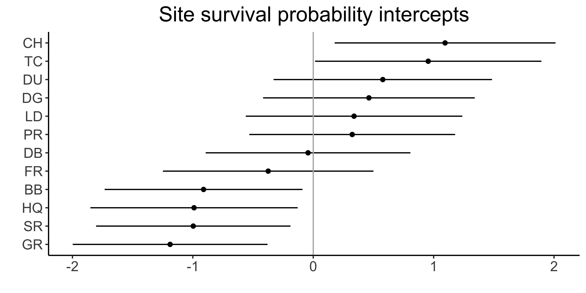
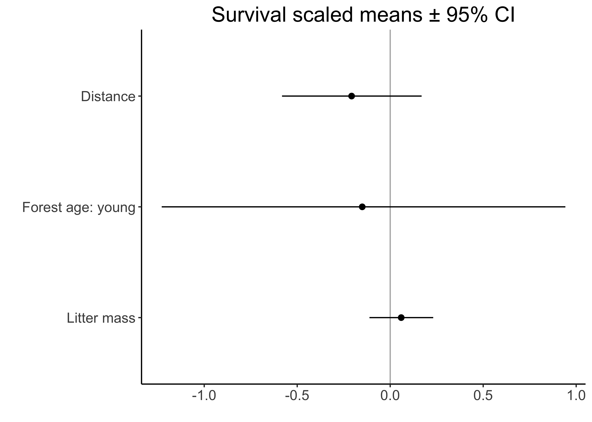